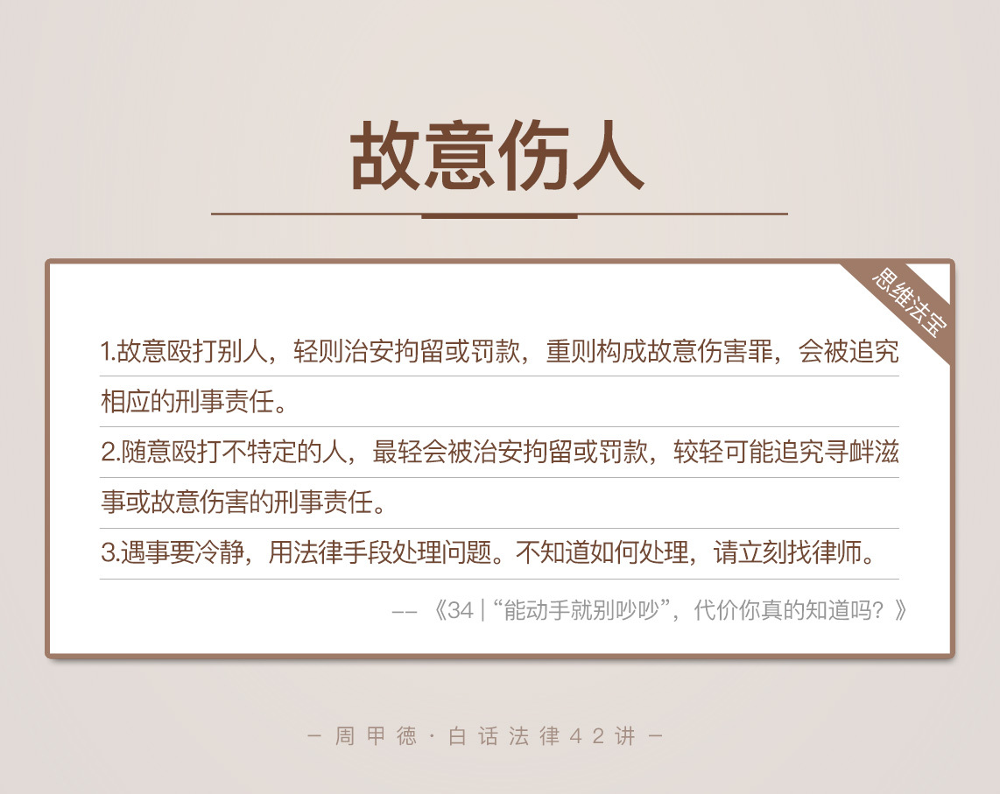

- 00 开篇词 这年头，你真应该懂点法律常识.md
- 01 “老周，我想知道” 常见法律认知盲区（一）.md
- 02 “老周，我想知道” 律师就在你身边（二）.md
- 03 “老周，我想知道” 律师就在你身边（三）.md
- 04 “老周，我想知道” 律师就在你身边（四）.md
- 05 创业未捷老板跑，社保工资哪里讨？.md
- 06 保密还是“卖身”，霸王条款怎么看？.md
- 07 编造流言蹭热度？看守所里降温度！.md
- 08 合同在手欠款难收，报警有用吗？.md
- 09 致创业：谁动了我的股权？.md
- 10 又见猝死！工“殇”究竟是不是工伤？.md
- 11 期权的“前世今生”.md
- 12 裁员面前，你能做的还有什么？.md
- 13 抄袭、盗图为什么做不得？.md
- 14 加班、工资、休假，你知道多少？.md
- 15 受贿原来这么“容易”.md
- 16 今天你用“VPN”了吗？.md
- 17 漏洞在眼前，可以悄悄破解吗？.md
- 18 “爬虫”真的合法吗？.md
- 19 非法集资到底是个啥？.md
- 20 黄色网站？不仅仅是“黄色”罪名.md
- 21 谁修改了我的积分资产？.md
- 22 外挂真能大吉大利吗？.md
- 23 如何看待“从删库到跑路”？.md
- 24 “伪基站”是你的避风港吗？.md
- 25 “网络诈骗”真的离你很远吗？.md
- 26 智斗中介：“北上广”租房图鉴.md
- 27 买买买！买房的“避坑”指南.md
- 28 闪婚又闪离，彩礼怎么理？.md
- 29 离婚还想和平？你要这么做.md
- 30 遗产继承的爱恨情仇.md
- 31 骗术升级？假结婚、假离婚的那些事儿.md
- 32 孩子学校受伤，谁之过？.md
- 33 如何让欠债还钱真正“天经地义”？.md
- 34 从透支到盗刷：人人须知的银行卡纠纷.md
- 35 远离“套路贷”的套路大全.md
- 36 危险！酒驾为什么被罚那么重？.md
- 37 老人倒地，“扶”“不服”？.md
- 38 “能动手就别吵吵”，代价你真的知道吗？.md
- 39 发生交通事故，如何处理？.md
- 40 交通事故综合法宝.md
- 41 婚姻家庭综合法宝.md
- 42 买卖房屋综合法宝.md
- 一键直达 法律专栏“食用”指南.md
- 加餐 “新冠肺炎”影响下，17个常见法律问题解答.md
- 结束语 法律，不会终止的篇章.md
38 “能动手就别吵吵”，代价你真的知道吗？
能动手就别吵吵，这句话估计你并不陌生，毕竟也是风靡一时的网红语录。可是，这句话背后的故事估计就没多少人知道了。
这句话其实来自2014年的一起刑事案件，一个二十多岁的小伙子，因为一点琐事，就把自己的未婚妻给勒死了。受审时还不认错，一句“能动手时就别吵吵，没用，还浪费性格”，让案件在网上沸腾了。
小伙子的冲动，让心爱的人失去了生命，自已也失去了人身自由，两个家庭也陷入了永久的悲伤，可以说，涉及到的每一个人，都是赤裸裸的悲剧。
你看，“能动手就别吵吵”，说起来容易，做起来容易，可是承担后果实在是不容易。我并不想说教些什么，君子动口不动手这类的大道理，今天，我只想用事实和法律说话。
我们先来看这么一个真实案例。这也是我接手的案件中，印象颇深的一个故事，也跟我们讲过的租房有关。
小唐是某985名校的研究生，硕士毕业后，进入一家知名的互联网科技公司工作。2016年6月份，小唐通过网上租房信息，联系到一个房东，合租了一间房。住进去没多久，房东却说是要在他合租房子的客厅打隔断，然后把客厅租出去。几个租客自然都不满意，强烈反对此事。
之后有一天，房东带人来看房，正好只有小唐在家。双方再次因为隔断的事情吵了起来，后来甚至动了手。争吵地点刚好在厨房门口，一次被房东推倒后，小唐顺势拿起了手边的菜刀，在房东脸上连划了好几刀。
双方争执越发严重，最后警察也被惊动了。两人都被警方带走，小唐因故意伤害罪被刑事拘留，而房东也被司法鉴定为轻伤。
小唐受到的惩罚自然不止于此，可是小小事件竟然上升到了犯罪的地步，让人唏嘘不已。故意伤害罪究竟是怎么认定的？又有哪些地方是我们可以避免的呢？
我们先来看几个法律知识。
法律知识
故意伤害罪
故意伤害的行为，很容易理解，指的是故意非法伤害别人身体健康的行为。如果情节相对较轻，会被治安拘留；如果伤情达到了轻伤以上的标准，就构成故意伤害罪，追究相应的刑事责任。
这里我解释一下，什么叫做“非法伤害”。如果某种致伤（死）行为是法律允许的，即使造成了伤害，只要在法律允许范围内，都不能算是非法伤害，也不算是违法行为。最典型的比如，
我们很熟悉的正当防卫行为；
医生采取的医疗救治措施；
消防人员采取的急救措施等。
除了这些合法的伤害行为，其他的大多数伤害，都属于非法伤害的范围。
另外要强调一下，身体伤害这个概念。其实不仅仅是身体健康，对别人心理的伤害，一样不被允许。比如说，公然辱骂别人的行为，即使不像身体伤害那种实际的伤害后果，也会被追究责任。根据《治安管理处罚法》，可能会以寻衅滋事罪的名义，追究刑事责任。
故意伤害罪的量刑相当严重。故意伤害他人身体，最高可能会判处死刑。具体来说，
故意伤害他人身体，处三年以下有期徒刑、拘役或者管制。
故意伤害致人重伤的，处三年以上十年以下有期徒刑。
致人死亡，或者以特别残忍手段致人重伤并造成严重残疾的，处十年以上有期徒刑、无期徒刑或者死刑。
轻伤与一般殴打
轻伤，一般包括肢体或容貌损害，听觉、视觉或其他器官部分障碍等，不过还达不到重伤的标准。司法鉴定中，轻伤分为轻伤一级和轻伤二级。常见的轻伤有：
头皮被锐器划破，伤口累计长度达到8厘米，儿童的话达到6厘米；
外伤性鼓膜穿孔；
牙齿脱落或者折断2枚以上；
常见的骨折等等。
轻伤一般都能痊愈，不会影响一个人身体的正常功能。
一般殴打，是比轻伤更轻的一种行为，会给别人造成暂时性的肉体疼痛，或使神经受到轻微刺激，但不会破坏别人人体组织的完整性和器官的正常机能。
这种情况虽然不会构成故意伤害罪，但像前面提到的，可能构成寻衅滋事罪。一般殴打行为通常按照《治安管理处罚法》来处罚，最常见的后果就是治安拘留。
情景分析
明白了这些知识，我们再来分析小唐的案件。
首先要明确的是，房东没有任何理由可以改变房屋的格局，来打隔断。其次，房东确实挑衅在先，存在过错，所以对这样的伤害后果，也要负一定责任。
但是，这些都不能成为小唐动手伤人的理由。小唐不够理智，造成了房东轻伤，故意伤害罪确实没得跑了。最后，他被判处有期徒刑一年零二个月，还要赔偿房东医疗费等一堆费用。可以说是搭上了自己的美好前途。
做了这么多年的律师，这一点实在是感触颇深。我的做法就是，除非威胁到了生命，不得不正当防卫，我才会出手反击。其他情况下，最多吵吵两句，千万不会动手伤人，动手的代价实在是承受不起。
就像今天的主人公小唐，我就无数次感慨，替他惋惜。面对无赖房东，他完全能通过正规渠道解决，比如，
可以向公安机关举报；
可以向法院起诉解除租房合同；
可以联合其他租户一起合理阻止。
但是，小唐都没有做。他感觉无路可走，所以才会冲动之下，伤人、赔钱、丢工作还进了监狱呀。
冲动是魔鬼，决不能因一时冲动，毁掉自已的幸福。随着法治社会的建立完善，动手的代价越来越大，遇到了不讲理的人自然有对应的处理办法，首先想到的一定是法律上的处理办法，切不可乱用私立手段。
思维法宝
我们来总结一下，今天的内容。

故意殴打别人，轻则治安拘留或罚款，重则构成故意伤害罪，会被追究相应的刑事责任。
随意殴打不特定的人，最轻会被治安拘留或罚款，较轻可能追究寻衅滋事或故意伤害的刑事责任。
最重要的是，遇事千万要冷静，要用法律手段处理问题。实在不知道如何处理时，请立刻打电话找律师咨询，一定会有解决的方法。
“能动手时别吵吵”、“该出手时就出手”，这样的谬论，只能当成段子听听，绝对不能实践。更不能一气之下，明知故犯，就为了痛快一把。冲动了一时，葬送的是自己的时间、金钱还有自由。
请你记住一句话：遇到问题，总会有对应的法律途径解决，法律就是专治各种问题的，除非你遇到的根本就不是个问题。相信我，在动手这件事情上，法律一定会让动手的人吃亏。
今天的内容主要就是这些。对于故意伤害，估计你并不陌生，你有什么经历或者疑惑吗？欢迎留言和我分享，也欢迎你把这篇文章分享给你的亲朋好友。能用法律解决的事儿，就别亲自动手了。
© 2019 - 2023 Liangliang Lee. Powered by gin and hexo-theme-book.